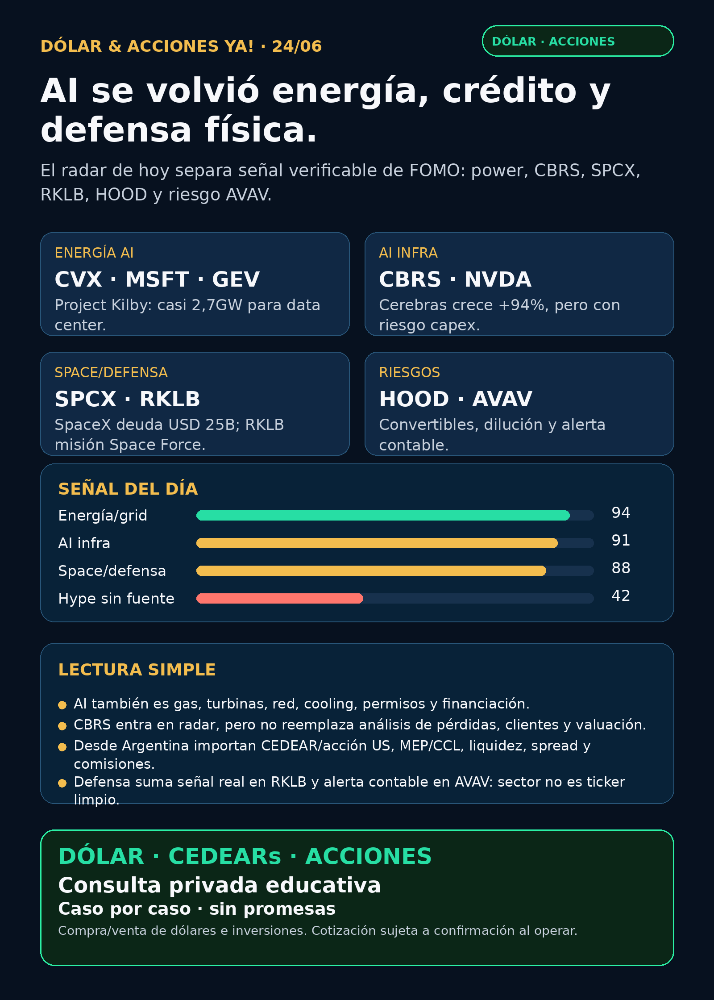

AI ya se mide en energía, crédito y defensa física.
Reporte educativo para Argentina: fuentes verificadas, capa dólar/CEDEARs y cero recomendación personalizada.

Audio: suspendido por instrucción vigente de Charly. Esta edición es texto, imagen y fuentes.
Dólar & Acciones YA — Radar completo — 24/06
Lectura simple del día
La señal de hoy es clara: la AI trade ya no se mira solo en chips. Se está convirtiendo en una pelea por energía dedicada, turbinas, cooling, data centers, space/defensa, crédito corporativo y alternativas públicas a NVIDIA.
En criollo: una empresa puede ser excelente y aun así no ser buena inversión al precio actual. Desde Argentina hay otra capa: CEDEAR o acción directa, MEP/CCL, spread, comisiones, liquidez, impuestos y tamaño dentro de cartera. Esto es research educativo para decisión humana, no una orden de compra o venta.
Dólar Argentina — snapshot operativo
Fuentes públicas consultadas esta mañana 24/06 08:47 AR: BlueLytics, CriptoYa y DolarAPI. Para operar, confirmar siempre broker/mesa en vivo, horario, spread y comisiones.
- BlueLytics 24/06 08:45 AR: oficial compra $1439 / venta $1491; blue compra $1472 / venta $1505.
- CriptoYa: MEP AL30 24h aprox. $1506,99 y CCL AL30 24h aprox. $1552,32, con timestamps de mercado/cierre del 23/06; no tratarlo como precio intradiario de broker.
- CriptoYa cripto/USDT 24/06 08:46 AR: ask aprox. $1543,85 / bid aprox. $1539,99.
- DolarAPI: respondió 200 con actualización 23/06 para varias series; se usa como contraste, no como única fuente intradiaria.
Tesis central
La AI se volvió física y financiera:
- Energía/data centers: Chevron y Microsoft avanzan con Project Kilby en West Texas: acuerdo de 20 años para casi 2,7 gigawatts de power dedicado, mayormente con turbinas GE Vernova; inicio esperado 2028 y decisión final de inversión pendiente. Esto empuja la tesis de gas, turbinas, generación dedicada y grid.
- SpaceX/SPCX: SEC 8-K informó pricing de USD 25.000 millones en senior unsecured notes. SpaceX ya no es solo historia de equity/IPO: también se financia como megacap de crédito. Pero hay que separar acción, bono institucional, liquidez, acceso Argentina y precio.
- Cerebras/CBRS: SEC EX-99.1 reportó Q1 FY2026: revenue GAAP USD 193,4 millones (+94% interanual), margen bruto 45%, pérdida neta USD 14,0 millones, cash/investments USD 3.300 millones, acuerdo OpenAI >USD 20.000 millones por 750MW, partnership AWS e IPO proceeds USD 6.400 millones. Pasa a radar alto como alternativa pública de AI infra.
- Rocket Lab/RKLB: lanzó VICTUS HAZE para U.S. Space Force con notice-to-launch de 16h42m. Refuerza la lectura de space + defensa responsive, no solo cohetes.
- Robinhood/HOOD: SEC 8-K: oferta privada de USD 2.000 millones de convertible senior notes 0,00% due 2029. Doble lectura: financia expansión/productos agentic, pero suma riesgo de estructura/dilución.
- Defensa con alerta: AVAV sigue interesante por drones/counter-UAS/space, pero el 8-K de restatement/material weakness obliga a prudencia.
- Pharma: sin novedad primaria fuerte 24–72h comparable a AI/energía. La señal útil es regulatoria: FDA mantiene consulta de Real-Time Clinical Trials hasta 29/06 con pruebas de concepto AstraZeneca/Amgen.
Radar educativo por calidad de señal — no es ranking de compra
1) Energía dedicada para AI — CVX / MSFT / GEV / CAT
- Qué pasó: CNBC verificó acuerdo de 20 años para Project Kilby: casi 2,7GW para un data center de Microsoft en Texas, mayormente con turbinas GE Vernova, no conectado inicialmente a la red.
- Lectura en criollo: AI necesita electricidad firme y barata. No alcanza con “más GPUs”: hacen falta gas, turbinas, permisos, generación dedicada, transmisión, cooling y capital.
- Estado: señal fortalecida / seguimiento.
- Riesgo: decisión final de inversión pendiente, ejecución 2028, costo de capital, regulación ambiental, gas price y concentración de clientes.
- Fuente: https://www.cnbc.com/2026/06/22/chevron-cvx-microsoft-msft-natural-gas-data-center.html
2) Cerebras / CBRS — alternativa pública a NVIDIA
- Qué pasó: SEC EX-99.1: Q1 FY2026 con revenue USD 193,4 millones (+94%), margen bruto 45%, pérdida neta USD 14,0 millones, cash/investments USD 3.300 millones; acuerdo OpenAI >USD 20.000 millones por 750MW y partnership AWS.
- Lectura: CBRS es uno de los pocos caminos públicos para mirar AI accelerators/compute cloud fuera del eje NVIDIA. No es “NVIDIA killer”; es radar alto con riesgos propios.
- Estado: señal fortalecida / radar alto.
- Riesgo: pérdidas, concentración OpenAI/AWS, capex de data centers, warrants, valuación post-IPO y acceso desde Argentina todavía no verificado.
- Fuente: https://www.sec.gov/Archives/edgar/data/2021728/000162828026044941/cbrsannouncesfinancialresu.htm
3) SpaceX / SPCX — equity extraordinario, deuda gigante y acceso a separar
- Qué pasó: SEC 8-K: SpaceX priceó USD 25.000 millones de senior unsecured notes: 2031, 2033, 2036, 2046 y 2056, con cupones entre 5,350% y 6,650%.
- Lectura: SpaceX se comporta como compañía pública de escala enorme, pero una cosa es la empresa y otra el instrumento: acción, bono, wrapper privado, CEDEAR inexistente/no verificado o acceso por broker US.
- Estado: vigilar / radar central. No accionable automáticamente.
- Argentina/US: antes de cualquier decisión humana hay que verificar broker, especie, liquidez, spread, precio vivo, tratamiento fiscal y tamaño de posición.
- Fuente: https://www.sec.gov/Archives/edgar/data/1181412/000162828026044955/spcx-pricing8xk.htm
4) Rocket Lab / RKLB — space + defensa responsive
- Qué pasó: Rocket Lab lanzó VICTUS HAZE para U.S. Space Force con notice-to-launch de 16h42m, spacecraft Pioneer propio y operación orbital 24/7.
- Lectura: RKLB fortalece tesis de integración vertical: diseño, fabricación, lanzamiento y operación para defensa. No es solo “launch beta”.
- Estado: señal fortalecida / seguimiento.
- Riesgo: volatilidad alta, contratos concentrados, ejecución, valuación, dilución potencial y dependencia de presupuesto defensa/space.
- Fuente: https://rocketlabcorp.com/updates/victus-haze/
5) NVIDIA / NVDA — physical AI + cooling sigue estructural
- Qué pasó: NVIDIA sigue empujando Halos for Robotics y Rubin/DSX liquid cooling. No es un titular aislado: conecta safety de robots, densidad de cómputo, agua, power y cooling.
- Lectura: el moat AI no es solo chip; es chip + networking + software + safety + data center refrigerado + electricidad.
- Estado: moat estructural fortalecido, pero con valuación exigente.
- Riesgo: expectativas muy altas, China, competencia, supply chain, energía/agua y capex.
- Fuentes: https://nvidianews.nvidia.com/news/nvidia-announces-halos-for-robotics-the-industrys-first-full-stack-safety-system-for-physical-ai ; https://blogs.nvidia.com/blog/liquid-cooling-ai-factories/
6) Robinhood / HOOD — agentes financieros con controles, más riesgo de capital
- Qué pasó: SEC 8-K: HOOD anunció y priceó USD 2.000 millones de convertible senior notes 0,00% due 2029. Esto se suma a su tesis previa de Agentic Trading vía MCP con disclosures explícitos de pérdida total, errores, datos incompletos y salida de datos a terceros.
- Lectura: los AI trading agents pueden ser producto real, pero solo sirven si hay governance: presupuesto limitado, ledger, auditoría, modo read-only/paper antes de live, aprobación humana y límites de riesgo.
- Estado: vigilar.
- Riesgo: dilución/convertibles, regulación, comportamiento inesperado de agentes, reputación y volatilidad del trading retail.
- Fuentes: https://www.sec.gov/Archives/edgar/data/1783879/000178387926000074/hood-20260622.htm ; https://robinhood.com/us/en/agentic-trading/
7) Defensa / guerra física — RKLB fortalece, AVAV advierte
- Qué pasó: AVAV informó restatement/no reliance por goodwill impairment del Space reporting unit; loss from operations subestimado USD 89,402 millones, net loss USD 87,272 millones y material weakness en internal control.
- Lectura: defensa/drones puede ser sector caliente, pero no elimina riesgo contable, integración ni ejecución. Sector atractivo ≠ ticker limpio.
- Recibo de cobertura: revisados AVAV, GE/GE Aerospace, RTX, LMT, NOC, GD, HWM, KTOS, BA e ITA/XAR. Señal fuerte: RKLB. Señal de riesgo: AVAV. GE y primes: revisados sin señal primaria nueva más fuerte para titular.
- Fuente: https://www.sec.gov/Archives/edgar/data/1368622/000110465926076140/avav-20260616x8k.htm
8) Pharma/salud — señal regulatoria, no hype GLP-1
- Qué pasó: FDA mantiene abierta hasta 29/06 la consulta de Real-Time Clinical Trials, con pruebas de concepto AstraZeneca y Amgen.
- Lectura: en pharma, velocidad regulatoria puede ser ventaja estructural, pero no reemplaza datos clínicos, etiqueta aprobada, población clara ni cobertura/revenue.
- Estado: radar educativo / sin catalizador primario fuerte para GLP-1 hoy.
- Fuente: https://www.fda.gov/news-events/press-announcements/fda-announces-major-steps-implement-real-time-clinical-trials
Watchlist base — seguimiento rápido
- RKLB: señal fuerte por VICTUS HAZE / Space Force / responsive space.
- NVDA: moat estructural fortalecido por robotics safety y liquid cooling.
- PLTR: revisado; sin fuente primaria nueva más fuerte hoy. Sigue en radar por software operacional, con riesgo de valuación.
- TSM / ASML / MU: revisados; estructuralmente críticos para semis/HBM/litografía, pero sin catalizador primario verificado superior al eje energía/CBRS/SPCX. MU queda para revisar tras earnings/press release.
- GOOGL/GOOG: revisado; cloud/TPU/Waymo siguen estructurales, sin señal primaria nueva fuerte hoy.
- AAPL: revisado; no elevar como AI moat nuevo sin evidencia concreta.
- HOOD: señal nueva de convertible notes + tesis agentic trading; vigilar riesgo de dilución.
- TSLA: robotaxi/autonomía con mucho ruido; sin señal primaria verificable fuerte en esta corrida.
- AVGO: sigue pieza central de networking/custom silicon, sin titular nuevo hoy.
- ASML: cuello de botella EUV/High-NA vigente; no “all-in” por una sola tesis.
- Gold/GLD/GOLD/B: mantener desambiguación. GLD, GOLD y B no son lo mismo; no hablar de oro sin instrumento exacto.
- RVI/DXYZ/VCX: wrappers private-tech sirven para educación, pero requieren NAV, premium/descuento, liquidez y holdings actualizados. No venderlos como acceso limpio a SpaceX/OpenAI.
- CBRS: radar alto nuevo de AI infrastructure pública; acceso Argentina/CEDEAR no verificado.
Energía y Argentina
- YPF: SEC 6-K informó recompra de Class XXX Notes por Ps. 33.729 millones, equivalente a par aprox. USD 23,214 millones. Es señal de manejo de pasivos, no tesis completa de compra.
- Argentina energy en radar educativo: YPF, Pampa, TGS, Central Puerto, TGN, Edenor y Transener siguen relevantes por Vaca Muerta, gas, tarifas, generación, transporte y transmisión.
- Puente con AI global: Project Kilby y liquid cooling muestran por qué gas, power y grid importan. Pero no hay que forzar equivalencias: cada acción local necesita precio, ADR/subyacente, CCL implícito, volumen, spread, comisiones y regulación.
- Fuente YPF: https://www.sec.gov/Archives/edgar/data/904851/000155485526001380/MainDocument.htm
Capa Argentina / instrumentos
- CEDEAR no es lo mismo que acción US: puede tener ratio, liquidez, spread y CCL implícito propios.
- MEP/CCL mueven el precio local: aunque el subyacente afuera esté quieto, la especie local puede moverse por dólar implícito.
- ETF/fondo/wrapper no es empresa: RVI/DXYZ/VCX pueden tener descuento/premium vs NAV, activos privados ilíquidos y pricing imperfecto.
- Regla práctica: buena empresa ≠ buena inversión al precio actual ≠ buen instrumento para Argentina ≠ buen tamaño dentro de cartera.
Autonomous mobility / physical AI
Revisados Tesla, Waymo/Alphabet, Uber, Zoox/Amazon y Joby. La señal más fuerte de physical AI hoy sigue viniendo por NVIDIA Halos/certificación y por infraestructura física, no por un lanzamiento público nuevo de robotaxi. Estado: seguimiento.
Space / orbital AI / private wrappers
SpaceX/SPCX y RKLB quedan como carril central por filings/eventos verificables. Starlink/Starship/orbital compute siguen en radar educativo. DXYZ/RVI/VCX no deben venderse como acceso limpio o barato a SpaceX/OpenAI sin NAV/premium/liquidez actual.
Crypto gobernado
Sin input crypto nuevo. Carril separado: BTC/ETH/SOL, ETFs/proxies regulados como COIN/MSTR/miners, stablecoins/payment rails y métricas verificables. Tokens virales/memecoins siguen como auditoría de riesgo, no oportunidad.
Red flags / hype para ignorar hoy
- “AI = comprar cualquier chip/robot”: incompleto. Sin energía, cooling, clientes, safety y unit economics, es demo.
- “SpaceX/SPCX es extraordinaria, entonces da igual el precio”: falso. Precio, liquidez, acceso y riesgo importan.
- “CBRS es el nuevo NVIDIA”: demasiado simple. Es alternativa pública en radar, con pérdidas, concentración y capex.
- “AVAV sube por defensa, listo”: falta mirar restatement, material weakness e integración.
- “AI trading agents hacen plata solos”: peligroso. El producto serio incluye controles, límites y posibilidad de pérdida total.
- “GLP-1/Lilly nuevo” sin FDA/Lilly primario actual: no se publica como catalizador.
- “GLD/GOLD/B es oro” sin ticker exacto: puede confundir ETF, minera o Berkshire.
Qué mirar después
- MU: earnings/press release oficial para HBM/memoria AI.
- CBRS: concentración de clientes OpenAI/AWS, capex, warrants, lockups y valuación.
- Project Kilby: decisión final de inversión, turbinas GEV, economics y permisos.
- SPCX: liquidez post-listing, acceso por broker US/Argentina y si aparece instrumento local real.
- HOOD: impacto de convertibles, regulación de agentic trading y controles.
- Argentina energía: YPF/PAMP/TGS/CEPU con precio, volumen, CCL implícito y spreads antes de hablar de ejecución.
Servicio privado
Dólar · CEDEARs · Acciones · Riesgo. Compra/venta de dólares e inversiones: escribime por privado y lo vemos caso por caso. Cotización sujeta a confirmación al momento de operar.
Disclaimer
No es asesoramiento financiero personalizado ni recomendación de compra/venta. Es research educativo para que una persona humana decida con precio, horizonte, liquidez, riesgo y cartera completa.
Servicio privado
Dólar · CEDEARs · Acciones · Riesgo. Compra/venta de dólares e inversiones: escribime por privado y lo vemos caso por caso. Cotización sujeta a confirmación al operar.
Canal: https://whatsapp.com/channel/0029Vb8G9fqGzzKSVUX3hc1S